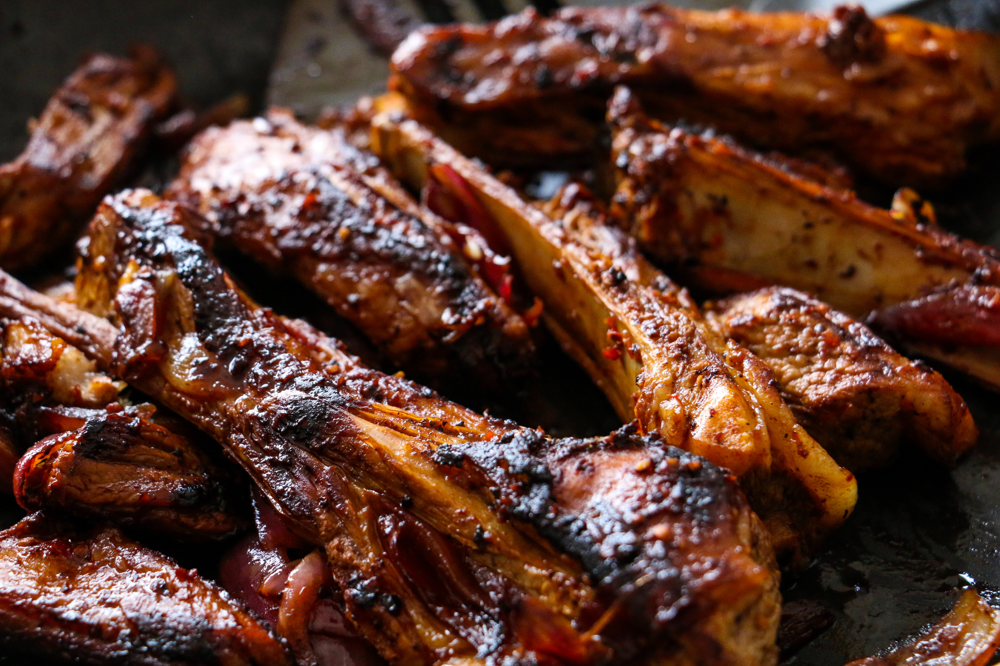

Learn how to prepare delicious Nyama Choma
Grilled or roasted meat is a delicacy enjoyed in Kenya and Tanzania. It is a crucial part of most festivities in the region.
Ingredients
For 4 Servings
Filling
- 1 kilogram of goat meat or beef
- 2 tablespoons of cooking oil
- A cup of water
- 1 large garlic
- 2 tablespoons salt
- 1 large lemon
- 1 medium ginger
- 1 pepper
Preparation
- Wash the meat and let it dry
- Make incisions on the meat then place it on a bowl
- Maxa mixture of grounded garlic,ginger and lemon juice
- Add the mixture to the meat in the bowl and mix it up to marinate.
- Cover the bowl and leave it for two hours
- Light a charcoal grill
- Wait for the coal to attain a desired temperature and then place the meat over the wire mesh
- Add one tablespoon of salt to the water. Mix it with a tablespoon of oil
- Sprinkle it on the meat as it cooks
- Keep turning the meat regularly for it to cook adequately on both sides
- Once the exterior has turned golden brown, slce the meat to check if it is cooked inside
- When the meat is read, wrap it in a foil and place it on the grill having low heat as it waits to be served.
Go to top
Home Page